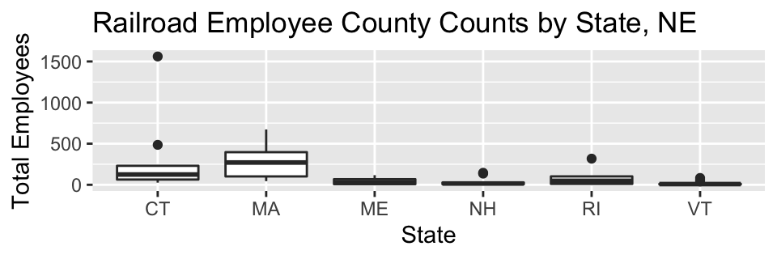
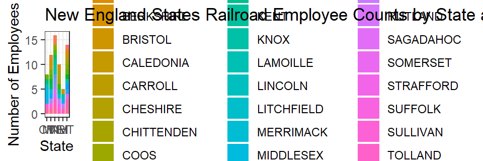
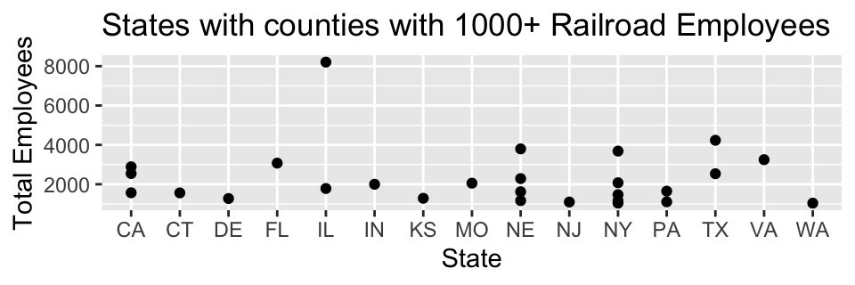

Homework assignment 1, 2 and 3. Loading data into an R Markdown file, Railroad Employment Data.
HOMEWORK 2
Total Railroad Employment by State and County 2012 breaks down US railroad employment numbers in 2012 by state and county. This dataset explores railroads.
It has 120 2930 observations and 63 variables.
The three variables are state, county and total employees. I chose to specifically study counties with a very large number of railroad employees. Separately, I also looked into railroad employee numbers just in the New England states.
Source
The dataset is sourced from (https://catalog.data.gov/dataset/total-railroad-employment-by-state-and-county-2012/resource/5a0b2831-23b9-4ce9-82e9-87a7d8f2c5d8)
For now, Echo is TRUE, for final version change to FALSEknitr::opts_chunk$set(echo = TRUE)
library("tidyverse")
library("readr")
library("ggplot2")
library("dplyr")
knitr::opts_chunk$set(fig.width = 5, fig.asp = 1/3)
state county total_employees
1 AE APO 2
2 AK ANCHORAGE 7
3 AK FAIRBANKS NORTH STAR 2
4 AK JUNEAU 3
5 AK MATANUSKA-SUSITNA 2
6 AK SITKA 1#Tail
tail(data)
state county total_employees
2925 WY SHERIDAN 252
2926 WY SUBLETTE 3
2927 WY SWEETWATER 196
2928 WY UINTA 49
2929 WY WASHAKIE 10
2930 WY WESTON 37#Dimensions
dim(data)
[1] 2930 3#Column Names
colnames(data)
[1] "state" "county" "total_employees"HOMEWORK 3
Experimenting with Data Transformation
Initially I didn’t understand this data. I thought that running the count code by county would return to me the number of railroads in each county. Then I reread the description about what this dataset is and realized it’s not about number of railroads, just number of railroad employees and their geographic location. The code count(data,county) is actually particularly useless because all it does is return the number of times that a county name repeats itself across the country. For example, 12 different states have an “Adams County” that has Railroad employees.
I’m keeping some of the less useful code here for practice, hopefully with an accurate description of what it actually is. I did not run count(data,county) since it takes up a lot of space.
#count(data,county)
#Count of Counties by State that have Railroad Employees
count(data,state)
state n
1 AE 1
2 AK 6
3 AL 67
4 AP 1
5 AR 72
6 AZ 15
7 CA 55
8 CO 57
9 CT 8
10 DC 1
11 DE 3
12 FL 67
13 GA 152
14 HI 3
15 IA 99
16 ID 36
17 IL 103
18 IN 92
19 KS 95
20 KY 119
21 LA 63
22 MA 12
23 MD 24
24 ME 16
25 MI 78
26 MN 86
27 MO 115
28 MS 78
29 MT 53
30 NC 94
31 ND 49
32 NE 89
33 NH 10
34 NJ 21
35 NM 29
36 NV 12
37 NY 61
38 OH 88
39 OK 73
40 OR 33
41 PA 65
42 RI 5
43 SC 46
44 SD 52
45 TN 91
46 TX 221
47 UT 25
48 VA 92
49 VT 14
50 WA 39
51 WI 69
52 WV 53
53 WY 22#Among Counties with Railroad Employees, what is the average number of employees in each county
summarise(data,avg=mean(total_employees))
avg
1 87.17816#Among Counties with Railroad Employees, what is the average number of employees in each county that has railroad employees, by state
data %>%
group_by(state) %>%
summarise(avg=mean(total_employees))
# A tibble: 53 × 2
state avg
<chr> <dbl>
1 AE 2
2 AK 17.2
3 AL 63.5
4 AP 1
5 AR 53.8
6 AZ 210.
7 CA 239.
8 CO 64.0
9 CT 324
10 DC 279
# … with 43 more rows#Distribution of Railroad Employees across the US (%)
data%>%
select(state)%>%
table()%>%
prop.table()*100
.
AE AK AL AP AR AZ
0.03412969 0.20477816 2.28668942 0.03412969 2.45733788 0.51194539
CA CO CT DC DE FL
1.87713311 1.94539249 0.27303754 0.03412969 0.10238908 2.28668942
GA HI IA ID IL IN
5.18771331 0.10238908 3.37883959 1.22866894 3.51535836 3.13993174
KS KY LA MA MD ME
3.24232082 4.06143345 2.15017065 0.40955631 0.81911263 0.54607509
MI MN MO MS MT NC
2.66211604 2.93515358 3.92491468 2.66211604 1.80887372 3.20819113
ND NE NH NJ NM NV
1.67235495 3.03754266 0.34129693 0.71672355 0.98976109 0.40955631
NY OH OK OR PA RI
2.08191126 3.00341297 2.49146758 1.12627986 2.21843003 0.17064846
SC SD TN TX UT VA
1.56996587 1.77474403 3.10580205 7.54266212 0.85324232 3.13993174
VT WA WI WV WY
0.47781570 1.33105802 2.35494881 1.80887372 0.75085324 #Filter out counties that have 1000 or more railroad employees
filter(data, total_employees>=1000)
state county total_employees
1 CA LOS ANGELES 2545
2 CA RIVERSIDE 1567
3 CA SAN BERNARDINO 2888
4 CT NEW HAVEN 1561
5 DE NEW CASTLE 1275
6 FL DUVAL 3073
7 IL COOK 8207
8 IL WILL 1784
9 IN LAKE 1999
10 KS JOHNSON 1286
11 MO JACKSON 2055
12 NE BOX BUTTE 1168
13 NE DOUGLAS 3797
14 NE LANCASTER 1619
15 NE LINCOLN 2289
16 NJ ESSEX 1097
17 NY DUTCHESS 1157
18 NY NASSAU 2076
19 NY QUEENS 1470
20 NY SUFFOLK 3685
21 NY WESTCHESTER 1040
22 PA BUCKS 1106
23 PA PHILADELPHIA 1649
24 TX HARRIS 2535
25 TX TARRANT 4235
26 VA INDEPENDENT CITY 3249
27 WA KING 1039#Reassign large railroad counties
large_railroadcounties<- filter(data,total_employees>=1000)
#Head
head(large_railroadcounties)
state county total_employees
1 CA LOS ANGELES 2545
2 CA RIVERSIDE 1567
3 CA SAN BERNARDINO 2888
4 CT NEW HAVEN 1561
5 DE NEW CASTLE 1275
6 FL DUVAL 3073#Count
count(large_railroadcounties)
n
1 27 state county total_employees
1 IL COOK 8207
2 TX TARRANT 4235
3 NE DOUGLAS 3797
4 NY SUFFOLK 3685
5 VA INDEPENDENT CITY 3249
6 FL DUVAL 3073
7 CA SAN BERNARDINO 2888
8 CA LOS ANGELES 2545
9 TX HARRIS 2535
10 NE LINCOLN 2289
11 NY NASSAU 2076
12 MO JACKSON 2055
13 IN LAKE 1999
14 IL WILL 1784
15 PA PHILADELPHIA 1649
16 NE LANCASTER 1619
17 CA RIVERSIDE 1567
18 CT NEW HAVEN 1561
19 NY QUEENS 1470
20 KS JOHNSON 1286
21 DE NEW CASTLE 1275
22 NE BOX BUTTE 1168
23 NY DUTCHESS 1157
24 PA BUCKS 1106
25 NJ ESSEX 1097
26 NY WESTCHESTER 1040
27 WA KING 1039select(large_railroadcounties,"state", "county")
state county
1 CA LOS ANGELES
2 CA RIVERSIDE
3 CA SAN BERNARDINO
4 CT NEW HAVEN
5 DE NEW CASTLE
6 FL DUVAL
7 IL COOK
8 IL WILL
9 IN LAKE
10 KS JOHNSON
11 MO JACKSON
12 NE BOX BUTTE
13 NE DOUGLAS
14 NE LANCASTER
15 NE LINCOLN
16 NJ ESSEX
17 NY DUTCHESS
18 NY NASSAU
19 NY QUEENS
20 NY SUFFOLK
21 NY WESTCHESTER
22 PA BUCKS
23 PA PHILADELPHIA
24 TX HARRIS
25 TX TARRANT
26 VA INDEPENDENT CITY
27 WA KING#Created subset of data that is just New England states, rename that group "new_england"
new_england <- filter(data, state %in% c("NH", "VT", "CT", "MA", "RI", "ME"))
#Among New England Counties with Railroad Employees, what is the average number of employees in each county
summarise(new_england, avg=mean(total_employees))
avg
1 119.4462#Count of New England Counties by State that have Railroad Employees
count(new_england,state)
state n
1 CT 8
2 MA 12
3 ME 16
4 NH 10
5 RI 5
6 VT 14#Among New England Counties with Railroad Employees, what is the average number of employees in each county that has railroad employees, by state
new_england %>%
group_by(state) %>%
summarise(avg=mean(total_employees))
# A tibble: 6 × 2
state avg
<chr> <dbl>
1 CT 324
2 MA 282.
3 ME 40.9
4 NH 39.3
5 RI 97.4
6 VT 18.5[1] "state" "county" "employees"#new_england<-rename(new_england,employees = total_employees)
colnames(new_england)
[1] "state" "county" "total_employees"#relocate()
#across()/c_across()
#pivot_longer()/pivot_wider()
#results are lengthy and not useful
#data%>%
#pivot_longer(cols=employees,
#names_to="Type",
#values_to="numberemployees")
#purrr::map()
#lapply()
#case_when()
#Assign the words Large, medium and small to specific numeric values for number of employees
data<-data%>%
mutate(Railroad_size = case_when(
employees >= 1000 ~ "Large",
employees >= 500 & employees < 1000 ~ "Medium",
employees < 500 ~ "Small"))
#See how many counties from full dataset have a small, medium and large amount of railroad employees
table(select(data, Railroad_size))
Large Medium Small
27 65 2838 #See how many counties in New England have a small, medium or large amount of railroad employees
new_england<-new_england%>%
mutate(Railroad_size = case_when(
total_employees >= 1000 ~ "Large",
total_employees >= 500 & total_employees < 1000 ~ "Medium",
total_employees < 500 ~ "Small"))
table(select(new_england, Railroad_size))
Large Medium Small
1 2 62 #Use crosstabs to which new england state have counties with a small, medium and large amount of railroad employees
xtabs(~state+ Railroad_size,new_england)
Railroad_size
state Large Medium Small
CT 1 0 7
MA 0 2 10
ME 0 0 16
NH 0 0 10
RI 0 0 5
VT 0 0 14#Boxplot for New England State Counties
ggplot(new_england,aes(state,total_employees))+geom_boxplot()+
labs(title = "Railroad Employee County Counts by State, NE", y = "Total Employees", x = "State")

#Geompoints for New England State Counties
ggplot(new_england,aes(state,total_employees))+
geom_point()+
geom_smooth()+
labs(title = "Railroad Employee County Counts by State, NE", y = "Total Employees", x = "State")

Experimenting with ggplot and fill
I would love to use fill, but it doesn’t make sense for this dataset. It doesn’t make sense because my third variable (county) is basically different for every state. This would be much more useful if that variable was something that had valuables that were applicable to all states.
#Geomplot for New England States with County filled (Two Ways)
#ggplot(new_england,aes(state, fill=county))+ geom_bar()+
#theme_bw()+
#labs(title="New England States Railroad Employee Counts by State and County", y="Number of Employees", x= "State")
#ggplot(data=new_england)+
#geom_bar(mapping=aes(x=state, fill=county))
#theme_bw()+
#labs(title="New England States Railroad Employee Counts by State and County", y="Number of Employees", x= "State")
Experimenting with geompoint, with different dataset
Illinois has 1 county that has over 8000 railroad employeesggplot(data=large_railroadcounties)+
geom_point(mapping=aes(x=state, y=total_employees))+
labs(title = "States with counties with 1000+ Railroad Employees", y = "Total Employees", x = "State")

Saving this code shared by Larri
#blackturnout <- blackturnout %>%
#mutate(candidateRename = recode(candidate, `1` = "co-ethnic", `0` = "not co-ethnic"))
Distill is a publication format for scientific and technical writing, native to the web.
Learn more about using Distill at <https://rstudio.github.io/distill>.
```{.r .distill-force-highlighting-css}